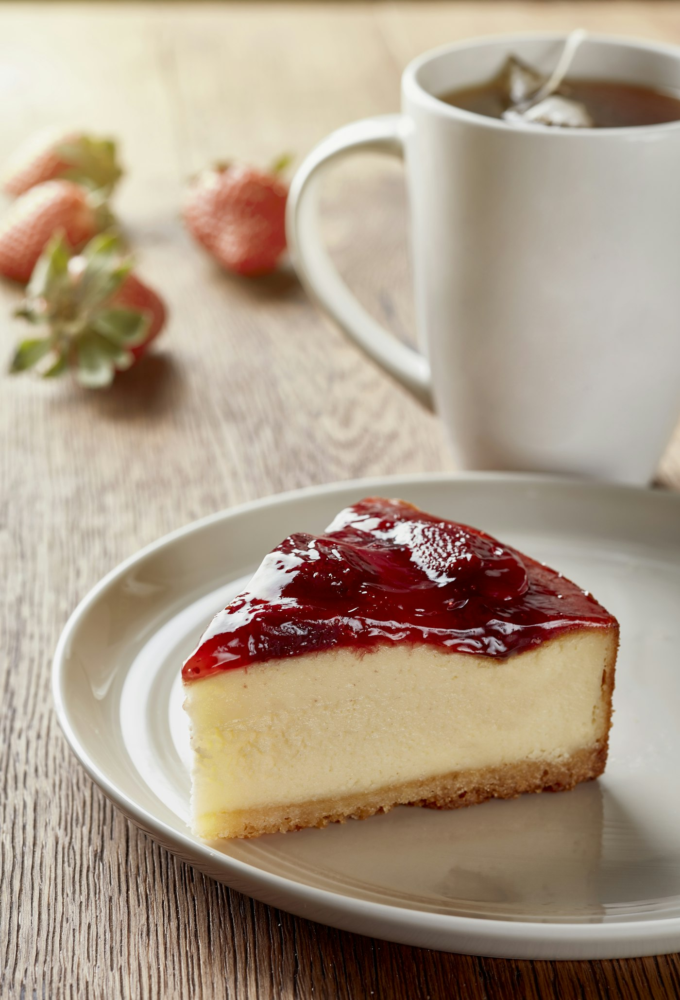

Pairing 01
바 안쪽 세트
직접 볶은 블렌딩 커피
+ 치즈케이크
11,500원10,500원
처음 오신 분께. 바에 앉아서 드시길 권합니다.
Menu
세 가지에 사연이 있고,
나머지는 조용히 자기 자리를 지킵니다.

Signature
4,500원
사장이 직접 로스팅하고 직접 블렌딩합니다. 맛 때문이기도 하지만, 그 블렌딩하는 과정 자체를 즐기기 때문입니다. 정작 사장은 커피를 못 마십니다. 남을 위해 만드는 잔입니다.
매주 월요일이 로스팅 날입니다. 그날 볶은 원두가 그 주의 커피가 됩니다.
6,000원
사장이 그 카페에서 늘 앞에 두고 앉아 있던 음료입니다. 커피를 못 마시는 사람의 자리를 지켜준 잔입니다. 원래 맛은 “편의점 딸기라떼 맛, 보편적인 맛”이었습니다. 좋았던 이유는 호불호가 없어서. 그 보편성은 그대로 두고, 단맛만 내렸습니다.
목표는 하나입니다 — “편의점 딸기라떼가 생각나는데, 덜 달다.”
7,000원
커피와도 잘 어울리고, 사장처럼 커피 못 마시는 사람도 좋아하기 때문에 있습니다. 커피 마시는 사람과 못 마시는 사람이 같은 테이블에 앉을 수 있게 해주는 메뉴입니다. 직접 굽습니다. 받아오지 않습니다.
Pairing
뭘 마시느냐보다 어디에 앉느냐가 먼저라, 조합에도 자리 이름을 붙였습니다.
Pairing 01
직접 볶은 블렌딩 커피
+ 치즈케이크
11,500원10,500원
처음 오신 분께. 바에 앉아서 드시길 권합니다.
Pairing 02
딸기라떼
+ 치즈케이크
13,000원12,000원
사장이 늘 시키는 조합입니다.
Pairing 03
드립 커피
+ 원두 200g
23,500원22,000원
집에서도 같은 걸 마시고 싶은 분께.
Full Menu
| Coffee | |
| 직접 볶은 블렌딩 커피사장이 직접 로스팅하고 블렌딩합니다 | 4,500원 |
| 드립 커피 (싱글 오리진)그날 볶은 원두 한 종류만 내립니다 | 5,500원 |
| Non-Coffee | |
| 딸기라떼직접 졸인 콩포트, 시럽 없이 | 6,000원 |
| 자몽 에이드에이드류 대표 | 6,000원 |
| 청귤 에이드여름에만 | 6,000원 |
| 논커피 초코커피 못 마시는 손님의 두 번째 선택지 | 6,000원 |
| Dessert & Bean | |
| 치즈케이크하루 열두 조각. 소진되면 그날은 끝입니다 | 7,000원 |
| 원두 200g봉투에 로스팅한 날짜를 손으로 적어 드립니다 | 18,000원 |